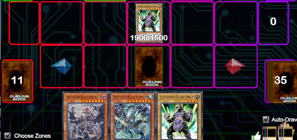

Esempi
Nella seguente sezione andremo ad anlizzare alcune meccaniche di gioco usando esempi pratici. Questi esempi metteranno in luce alcuni punti critici della strategia di Yu-Gi-Oh, dando uno spunto di riflessione al giocatore che si immegerà nella lettura.
Se non hai ancora approfondito l' extra deck clicca qui per saperne di piùAnaliziamo le carte Fusione
Prendiamo come esempio questa situazione: al primo turno abbiamo 3 carte trappola, 2 mostri di livello molto alto e un mostro di livello 4.
In questa situazione siamo completamente bloccati, i mazzi competitivi oggigiorno riescono a schierare mostri molto potenti anche al primo turno, mentre con questa mano l'unica cosa che possiamo fare è posizionare le trappole ed evocare un mostro mediocre, Alanera bora la lancia, che da solo può fare ben poco.
Sul nostro campo avremo solo un mostro con 1700 di attacco, che è superabile anche da svariati mostri che si possono evocare normalmente senza combo particolari.
Vediamo ora una mano simile, ma con extra deck ed un mazzo che lo sfrutta bene:
abbiamo ancora 2 trappole, un mosto di livello 4, un 2 mostri di livello alto e una carta polimerizzazione
Questa volta senza neanche dover evocare normalmente un mostro, potremo usare polimerizzazione per evocare un mostro fusione specialmente dall'extra deck usando come materiali i due mostri di alto livello nella nostra mano, quindi invocheremo dragone nero occhi rossi.
Il nostro potenziale di attacco alla fine di questo turno sarà di 3000, che risulterà una barriera abbastanza complessa da superare per il nostro avversario e inoltre potremo sfruttare l'effetto di dragone nero occhi rossi, che ci permette di annullare molti effetti delle carte dell’avversario e di distruggere 1 o 2 mostri sul campo dell’avversario, infine 1 volta per turno potenzialmente, può aumentare il suo punteggio di attacco di 1000!
Forse però sembra molto fortuito avere la combinazione giusta di mostri al momento giusto per la fusione giusta, ma con un mazzo ben pensato non serve molta fortuna, basta avere strategia!
Immaginiamo di avere solo Mago nero in mano come mostro, che è uno degli ingredienti di Dragone nero occhi rossi, ma non abbiamo nessun altro mostro da usare come ingrediente; normalmente non potremmo fare niente, ma se al posto di mettere nel nostro deck una normale polimerizzazione mettessimo dentro fusione occhi rossi il problema sarebbe risolto! Questa carta, infatti, ti permette di prendere un qualsiasi mostro dal deck, mano o terreno e usarlo per una fusione al posto di qualsiasi mostro che ha nel nome occhi rossi.
Le carte fusione quindi sono molto utili quando abbiamo bisogno di un mostro molto potente per svoltare la partita, oppure quando ci troviamo con una mano bloccata, visto che molte carte come polimerizzazione permettono di utilizzare mostri anche dalla mano, senza doverli prima evocare.
Inoltre esistono molte carte diverse per avviare un'evocazione tramite fusione, ognuna con delle particolarità e fatte ad hoc per certe situazioni, esistono addirittura effetti di mostri che permettono di fare un'evocazione fusione senza l'aiuto di altre carte, quindi possono essere un'aggiunta molto interessante per il tuo extra deck.
Analiziamo le carte Synchro
Questa volta analizzeremo le carte synchro e per evidenziare la loro utilità useremo il mazzo alanera. La specialità di questo mazzo è poter evocare molti mostri velocemente con evocazione speciale, ma pecca molto nella potenza di questi mostri. Senza scendere troppo nei dettagli degli effetti delle carte, in un solo turno possiamo generare un terreno come questo:
Possiamo quindi notare che anche se il nostro mazzo è molto veloce, ci fa evocare molti mostri e ci fornisce una formazione che sulla carta non sembra male, ma basta un mostro con un punteggio d'attacco poco superiore alla media per metterla in ginocchio. Qui entra in gioco la forza del mazzo alanera! Sul nostro terreno infatti abbiamo molti mostri con molti livelli diversi e anche un tuner, questo ci permette di avere tante combinazioni di livello per evocare mostri synchro di vario tipo.
Quindi con un extra deck fornito di un buon numero di synchro possiamo trasformare una situazione così fragile in un terreno come questo:
Il vero vantaggio dei synchro è la semplicità di evocazione, questo perché una volta che hai un tuner sul terreno si possono comporre gli ingredienti con molta più libertà visto che l'unico vincolo è avere una combinazione di livelli adatta al mostro che si vuole evocare. Da questo punto di vista possono essere visti come una via di mezzo tra le fusioni e gli xyz.
In questo caso, ad esempio, abbiamo evocato Alanera Maestro Armatura Completa che, oltre ad avere 3000 punti di attacco permette di mettere dei segnalini sui mostri avversari in certe condizioni e in seguito permette di distruggere tutti i mostri con questi segnalini automaticamente. Inoltre il mostro tuner che abbiamo usato per la nostra synchro evocazione ci permette di fare una combo molto potente! Attivando il suo effetto e rimuovendolo dal gioco possiamo mettere un segnalino ad ogni mostro dell’avversario, così Alanera Maestro Armatura completa potrà fare piazza pulita delle difese avversarie.
Link Climbing
In questa sezione andremo a vedere come sfruttare link di livello basso per arrivare a link di livello più alto. Questo concetto è globalmente conosciuto come link climbing. In questo esempio vedremo una mano particolarmente sfortunata che contiene solamente carte difensive, mostri normali e alcuni mostri di livello molto alto. Una mano del genere potrebbe fortemente compromettere l’esito del duello. Infatti, se non fossero presenti i mostri link nel nostro extra deck, l’unica cosa che potremmo fare sarebbe evocare normalmente il nostro mostro, posizionare le carte trappola nelle loro zone e passare il turno all’avversario.
Prendiamo la board appena vista e sfruttiamo i mostri link presenti nel nostro extra deck.
- Mandiamo Gladiatore Bestia Andal al cimitero per evocare specialmente dal nostro extra deck Link Spider.
- Poi possiamo sfruttare l’effetto di Link Spider per evocare specialmente dalla nostra mano la seconda copia di Gladiatore Bestia Andal nella zona puntata dal nostro mostro.

- Ora, avendo due mostri sul terreno, possiamo sfruttare il nostro mostro link-2 Pantera da Laboratorio. Lo evochiamo specialmente dall’extra deck mandando Link Spider e Gladiatore Bestia Andal al cimitero.
- Applichiamo l’effetto di Pantera da Laboratorio ed il nostro mazzo inizia ad entrare in combo producendo questo terreno:
N.B le azioni che vanno a completare il terreno visto sopra sono tralasciate in quanto sono tipiche solamente di questa tipologia di deck. Infatti, solamente un deck Gladiatore Bestia riesce ad evocare fusioni senza l’utilizzo di polimerizzazione.
XYZ Detatching
Andiamo ora a guardare più nel dettaglio il vantaggio portato dai mostri xyz e come sfruttarlo al massimo. I mostri xyz sono facilmente evocabili e hanno effetti che, se sfruttati bene, portano degli ottimi risultati. In questo esempio vediamo il mostro Gear Gigant X: non è un mostro con punti attacco o difesa molto alti, ma il suo effetto permette di estendere le combo del proprio mazzo andando alla ricerca di mostri che ci potrebbero servire.
Il nostro esempio partirà dal seguente terreno:
Sul nostro terreno sono presenti 2 mostri di livello 4 ed è quindi possibile evocare Gear Gigant X sovrapponendo due mostri. Quando andremo ad attivare l’effetto del nostro mostro xyz ci verrà chiesto di staccare un materiale. La scelta risulta fondamentale per chiudere la combo in maniera corretta!
Esempio di scelta SBAGLIATA
- Sovrapponiamo "carro" con "AnimaPerfora" ed evochiamo Gear Gigant X.
- Attiviamo l’effetto di Gear Gigant X e scartiamo al cimitero "carro". In questo modo aggiungiamo un mostro di tipo macchina di livello 4 o inferiore dal deck alla mano. Scegliamo "trombettiere" in quanto è un mostro tuner che ci permetterà di tentare una synchro evocazione.
- Attiviamo l’effetto di waraji che ci permette di evocarlo specialmente dalla mano ed evochiamo specialmente. "trombettiere" ha un effetto simile che ci permette di evocarlo specialmente.
- Effettuiamo una synchro evocazione di livello 7 (5 + 2) ed evochiamo "stealth ninja". Con questo passaggio la nostra combo è finita.

Esempio di scelta CORRETTA
- Sovrapponiamo "carro" con "AnimaPerfora" ed evochiamo Gear Gigant X.
- Attiviamo l’effetto di Gear Gigant X e scartiamo al cimitero "AnimaPerfora". In questo modo aggiungiamo un mostro di tipo macchina di livello 4 o inferiore dal deck alla mano. Scegliamo "trombettiere" in quanto è un mostro tuner che ci permetterà di tentare una synchro evocazione.
- Si attiva anche l’effetto di "AnimaPerfora" che ci permette di aggiungere un samurai superpesante a nostra scelta dal deck alla mano. Scegliamo un'altra copia di waraji.
- Attiviamo l’effetto dei due waraji e del "trombettiere" evocando tutti tre specialmente.
- Effettuiamo una synchro evocazione di livello 12 (5 + 5 + 2) ed evochiamo “re treno”. Con questo passaggio la nostra combo è finita.

La differenza tra i due terreni è ovvia. Occorre sempre prestare attenzione a quali mostri sovrapporre e quali staccare per sfruttare al massimo le potenzialità del nostro mazzo.